Primera propuesta
Esta opción permite seleccionar tu mención y área de interés, mostrando a los profesores disponibles según la especialidad que abordan. Incluye sus porcentajes de aprobación en proyectos de título, si son guías de tesis o seminario, y una descripción de sus atributos según encuestas docentes.
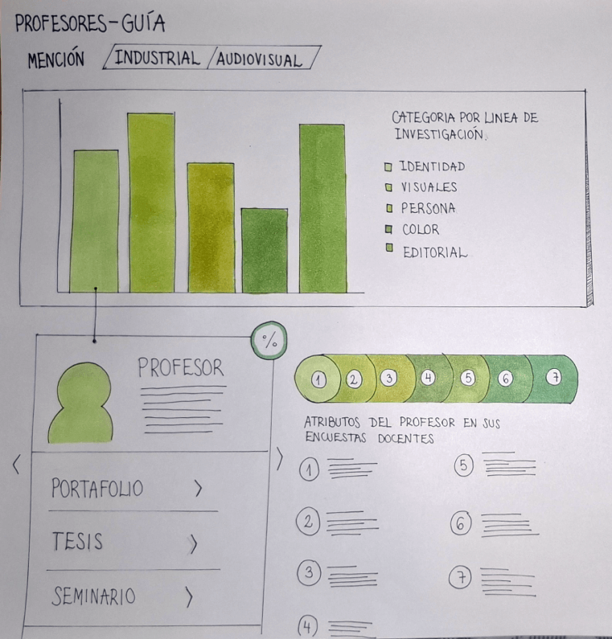
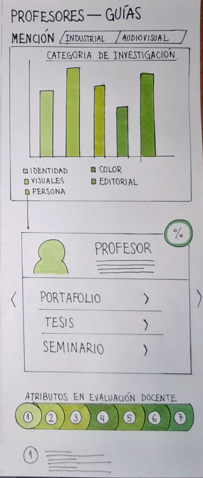
Segunda propuesta
Al ingresar, se despliega una lista de profesores guía con una breve descripción. Se clasifica a cada docente según los temas que suelen abordar en sus proyectos y se indica su nota promedio. Al final, se presentan opiniones de estudiantes que trabajaron con ellos.
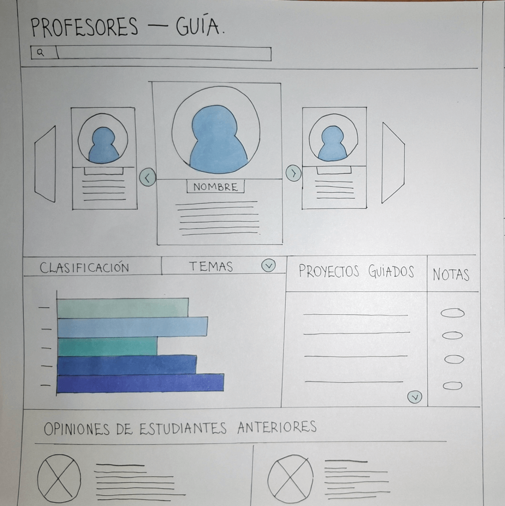
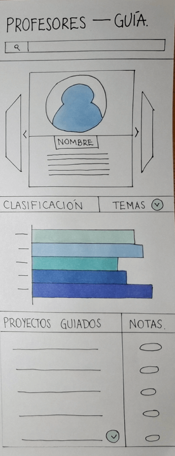
Tercera propuesta
Los profesores aparecen con su foto e información básica. Una tabla muestra su nivel de recomendación basado en el porcentaje de estudiantes que han titulado con ellos, junto con los títulos, conceptos clave y calificaciones de estos proyectos, junto con las áreas temáticas que dominan.
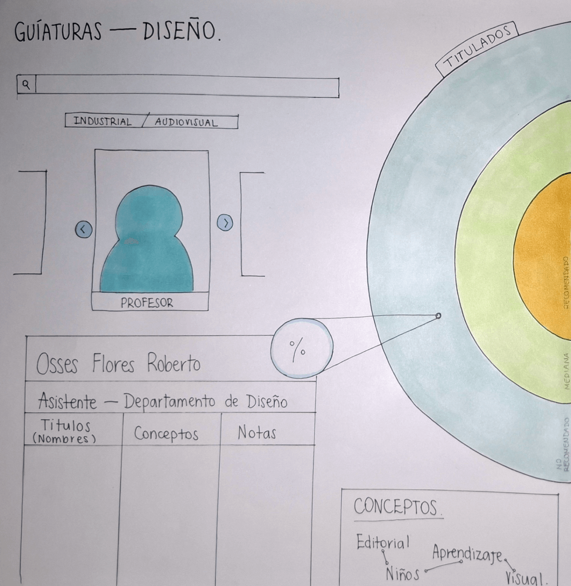
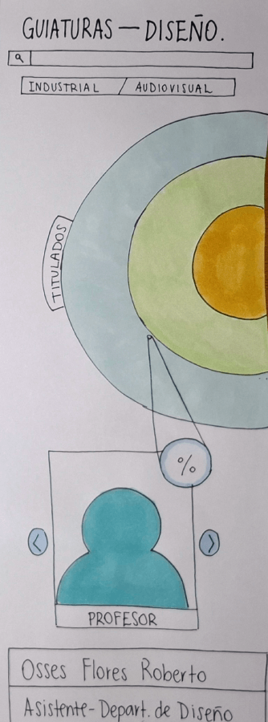
Cuarta propuesta
Esta opción muestra un gráfico general con el porcentaje de estudiantes por mención y el número de inscritos del semestre anterior. Al seleccionar una mención, se despliegan los docentes, su nivel de recomendación, información relevante y conceptos recurrentes en sus investigaciones.
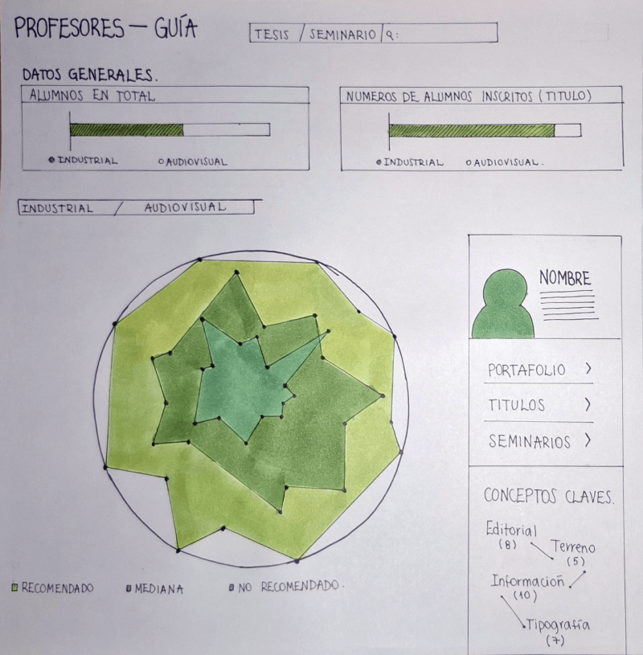
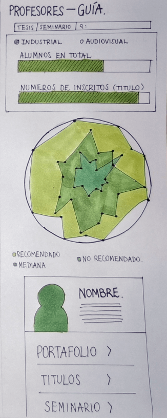
Quinta propuesta
La información está organizada por mención, mostrando los profesores disponibles ese semestre, sus datos generales, porcentaje de aprobación en proyectos de título, y una lista de trabajos guiados, además que se puede marcar al profesor como descartado, favorito o aceptado.
 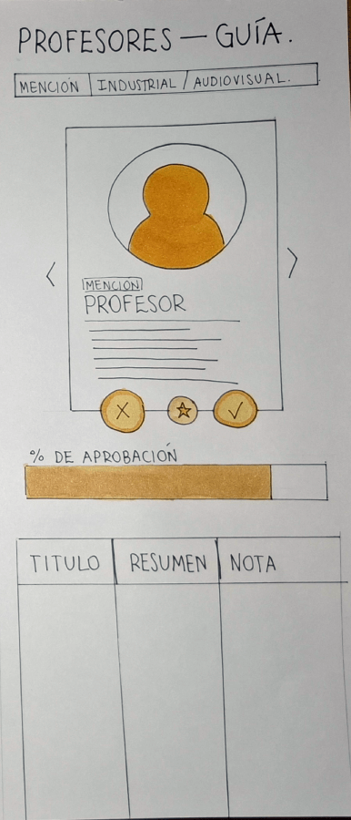
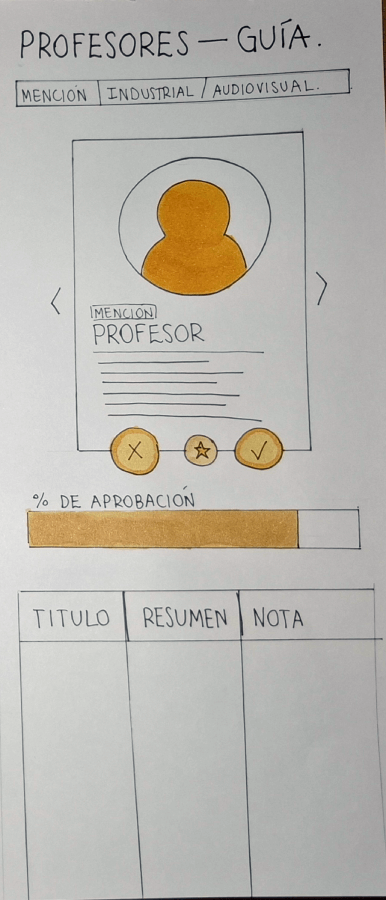
Sexta propuesta
Tras seleccionar la mención, se muestra un video introductorio de cada docente con ejemplos de proyectos guiados, sus calificaciones, nivel de aprobación y testimonios de estudiantes anteriores.
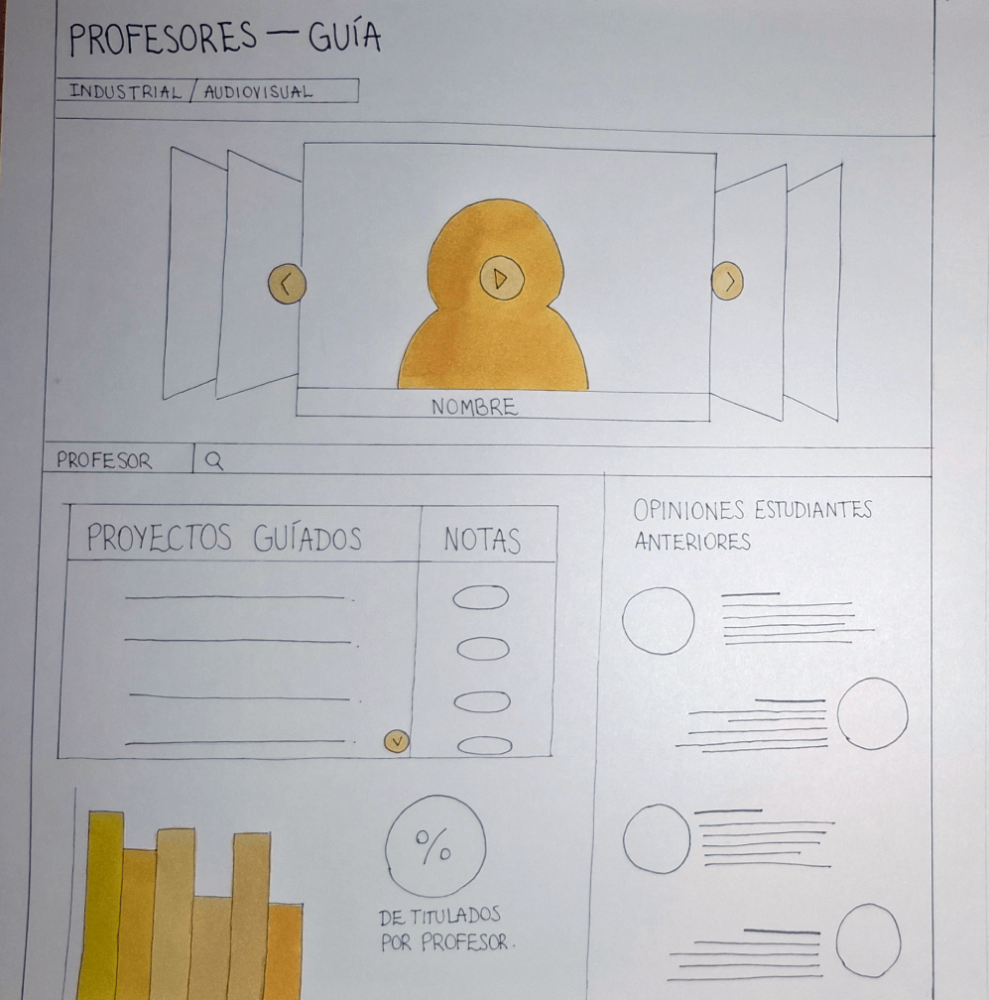